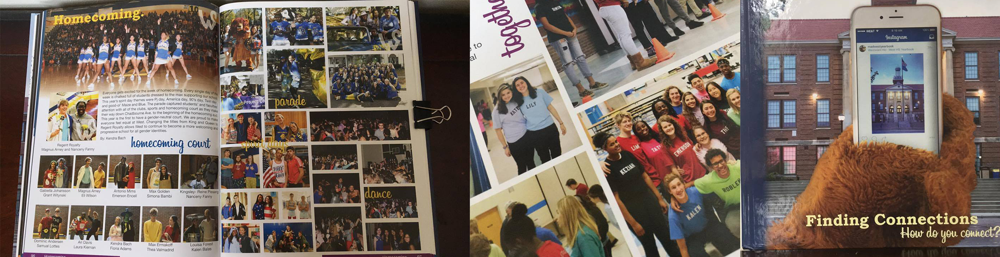
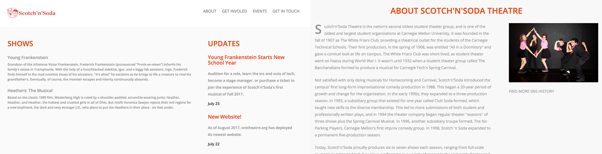
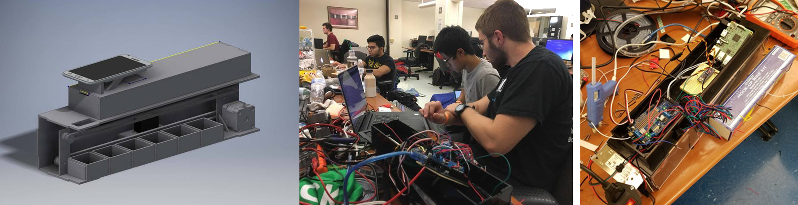

The objective of our project is to design, construct, and operate an EOI (Earth Observing Instrument) that will capture aerial images and use a classification algorithm to determine the land features on captured images. Unlike Earth observation satellites, orbiting above us right now, covering large areas, our EOI will be used for local observations, trading lower coverage for quicker, higher resolution images. Our classification program will be trained by manually classifying ground elements and feeding that into our program in order to teach it.
Extensive documentation and scheduling were done throughout the project. We wrote documentation at the stages of: Preliminary Design Review, Critical Design Review, Flight Readiness Review, and also a Post Flight Assessment. These documents can be found on this website under the tab: Documents.
Mars Ascent Vehicle and Autonomous Ground Support Equipment
We developed, in conjunction to our Mars Ascent Vehicle, the Autonomous Ground Support Equipment, AGSE for short, to retrieve a payload, transfer the payload into our vehicle, secure the payload enclosure door, erect the launch rail, and wait for motor ignition. The AGSE will be constructed out of an 8020 frame and actuated using stepper motors and linear actuators, all driven by an Arduino Mega 2560. More details about the AGSE can be found in our Documentation.
The vehicle will secure the payload that the AGSE will retrieve and take that payload to one mile above ground level (AGL), but not exceed that apogee. The vehicle will be constructed out of fiberglass and metal components with extra epoxy and strength at load-bearing joints. Currently, our rocket will be flying on a J-Class motor. More information about our vehicle can be found in our Documentation.
Extensive documentation and scheduling were done throughout the project. We wrote documentation at the stages of: Preliminary Design Review, Critical Design Review, Flight Readiness Review, and also a Post Flight Assessment. Every single component was also verified against the specifications provided by NASA and filled in to two verification matrices. These documents can be found on this website under the tab: Documents.
ResistAR is an Augmented Reality Circuit Visualizer and Solver. A user can place down circuit elements in parallel and series configurations and ResistAR will solve the current through and voltage across each element of the circuit. It gives the user an easy way to see (sharp) the circuit.
Experimental Characterization and Analysis of DRAM Energy Consumption and Variation
We use insights gained from our experimental characterization to perform two studies on the potential of mechanisms that exploit the data dependence and structural variation. One of our studies on energy-aware data encoding shows that we can potentially reduce DRAM energy consumption by 12.2%, averaged across a wide range of workloads. Ultimately, we hope that the findings in this paper will inspire new research directions in energy-aware DRAM design.
Link will be available once the work is published
iPhone Photography
A collection of photos with no real theme or purpose other than to quickly capture the moment on the phone that I am using at the time. I love how the iPhone camera, while not containing crazy amounts of mega pixels, still focuses well on the color science of its processors and the quality of its lenses to be able to deliver a great photography experience in such a small package. I didn't even know that the macro features of the lens existed until I tried sneaking up on a bee about a month ago.
The goal of this research project is to observe the combined effects that exercise and cognitive tasks has on the imporovement of executive function in pre-kindergarten children. While there is a lot of prior literature on the effects of exercise and cognitive tasks on pre-kindergarten children (both noting positive effects, though cognitive tasks not as much), this project aims to create the biggest improvement possible. The intervention also aims to rule out whether or not pre-kindergarten children are affected by cognitive tasks at all.
A link to the findings will be available once published.

West High School 2015-2016 Yearbook
I was on the Yearbook team during Senior Year of high school. I photographed, filmed, and designed spreads for this publication. We used AR technology to embed videos into the yearbook using the photos as activation cards. The yearbook was created with a team of 25 students and one teacer advisor. Each yearbook was also sold at the end of the school year by the team members to break even the printing costs.
CHIEF HIGH
Chief High is a documentary about the recreational use of marijuana at the high school level. It touches on the dangers of marijuana and the reasons why people still use the drug anyways. Chief High also touches on the abuse of substances, marijuana and beyond. Interviewing more than 50 high school students, I learned about the allure of the drug and also all of its problems, health-related or not.
Chief High was screened at private venues for high school students and received acclaim for its transparency of the topic.

Scotch'n'Soda Theatre Website
I was elected as Scotch'n'Soda Theatre's webmaster at the end of my Freshman year. Over the summer, I recycled the content of the old website into a new static site for easier hosting and also updated all of the CSS to make it cleaner.
I'm also working on creating new modules for our in-house theatre web app that schedules rehearsals, maintains production notes, and sends notifications to everyone in the organization.
Heathers: The Musical
I stage managed Heathers: The Musical with a co-stage manager and an assistant. We were the point of contact between the production staff, the artistic directors, the technical directors, and the actors. In total we worked with about 80 people within the organization in order to keep the logistics of the show running along. We also took down blocking and staging notes at every rehearsal for record keeping. Stage managers also call the cues for actor transitions, lights, and sound.
Heathers: The Musical is based on the classic 1989 film, Westerberg High is ruled by a shoulder-padded, scrunchie-wearing junta: Heather, Heather, and Heather, the hottest and cruelest girls in all of Ohio. But misfit Veronica Sawyer rejects their evil regime for a new boyfriend, the dark and sexy stranger J.D., who plans to put the Heathers in their place - six feet under. (Synopsis from Samuel French)
Rosencrantz and Guildenstern Are Dead
I stage managed Heathers: The Musical with a co-stage manager and an assistant. We were the point of contact between the production staff, the artistic directors, the technical directors, and the actors. In total we worked with about 50 people within the organization in order to keep the logistics of the show running along. We also took down blocking and staging notes at every rehearsal for record keeping. Stage managers also call the cues for actor transitions, lights, and sound.
The play concerns the misadventures and musings of Rosencrantz and Guildenstern, two minor characters from William Shakespeare's Hamlet who are childhood friends of the prince, focusing on their actions with the events of Hamlet as background. Rosencrantz and Guildenstern Are Dead is structured as the inverse of Hamlet; the title characters are the leads, not supporting players, and Hamlet himself has only a small part. (From Wikipedia)

InvenTeX
Have you ever finished up ECE lab or a small project like a PennApps hardware project and found that there were all of these screws, nuts, and resistors lying around everywhere? Or maybe you're just a hardware enthusiast but hate keeping track of all of your stuff (we like to do the old-fashioned way: the "hardware pile.") With InvenTeX, there is finally an easy solution to inventory maintenance. Gone are the days of hoping you have quarter inch threads and settling for glue, or even having to remember the resistor color code. InvenTeX does all for your inventory, so you can focus your all on your hardware.
InvenTeX identifies objects you want to keep in your inventory and helps you track them in groups so you don't have to. The workflow of InvenTeX is simple. When you first launch the app, you can choose to see what is in your inventory (at this point, nothing) and to insert something into the InvenTeX.